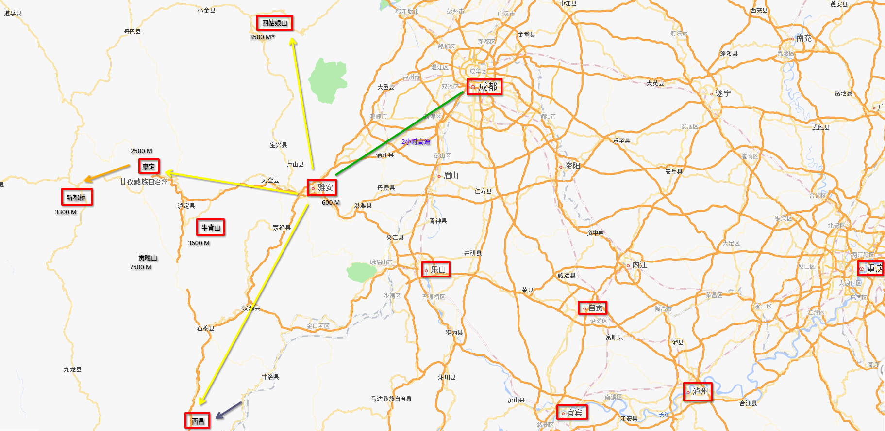

川西旅游的一些信息

1. 大体方向
成都往西南 150KM 左右是雅安，大概 2 个小时的高速。
雅安往南是西昌，全程高速。一般这个方向不是大家说的“川西”。
“川西”一般是往北的四姑娘山方向和往西的康定及新都桥方向。
往北到四姑娘山/双桥沟需要 3 个小时，全程没有高速。
往西到康定 2 个小时，全程高速。不过这里注意，从天全到泸定这一段，大概 1 小时的路程几乎全是隧道（隧道群可能有 60KM 吧）。
然后，再往西就没有高速了。康定到新都桥地图上看起来很短，实际车程也需要 1 个多小时。其实中间就是翻一座折多山（盘山路，上山和下山）。
路况问题后面说。
2. 关于景点和季节性
川西山多，还都是高海拔的，所以光是山或者雪山，没啥意思。最好的景点，一定是有水的地方。
考虑开发投入与收益，近点的好地方，就是开发过的景区。这些地方路况比较好，可以开车直接到景区门口。而且基础设施完善。当然相对地，这些地方人群容易扎堆，还有各种管理规定，不太自由。
比如牛背山，那里虽然没有水，但是确实是一个绝佳的观景平台，云海和各种山峰。雅安过去 3 个小时。早上 5 点出发的话，中午还可以回来吃午饭。当然，现在如果你想在上面看日出，就需要钞能力了。而在以前没有开发时，只有一些人骑着摩托车能往上跑。
第二梯队的，就是开车可以大概到达，整个过程的路况可能是不稳定的，基础设施就别想了（零下温度的环境，卫生间都是大问题）。
第三梯队的，是开车不可达的地方。这些地方可能有山有水，但是没路。它的景色，只属于那些户外徙步佬。
季节选择，个人建议是秋天最佳，其次春天。高原的秋天，因为海拔差异，植被容易呈现不同的颜色，比较好看。
冬天的道路通过性，容易被下雪影响，运气背的话很麻烦。而夏天的大降雨容易破坏道路，还会引发滑坡。
3. 路况与车的通过性
- 1. 高速只要不封路，就随便跑。
- 2. 国道，重要段是有专门的养路队的。即使是国道，也要考虑下雪道路积雪情况。注意，这里是“积雪”，不是“结冰”。一旦积雪，车辆走山路需要上防滑链。
- 3. 其它硬化路。除了窄，会车小心点，没啥特别的。对了，有些有水背阴的硬化路，会结冰，冰厚了的话直接啥车也别想过了。这种要特别小心。
- 4. 砂石路。很多观景台，最后一段路就是砂石路。虽然跑起来不舒服，但是其实对通过性没啥影响，慢慢开就行。
- 5. 其它有炮弹坑的路。所有两驱车劝退。
- 6. 结冰的路。所有车劝退。
- 7. 没路。自己请便。
总的来说，至少到新都桥附近，天气好点过了折多山，轿车也能去大部分地方。而有炮弹坑的那种路，两驱的 SUV ，单车也不要去。（我往“云绕雅拉”跑时，就中途放弃了，感觉是之前有大雨把那段路搞坏了）
如果有专门准备翻山时间的条件的话，建议中午过后这段时间。因为对于国道重要路段，即使夜间有积雪，第二天养路队也会用推土机清理路面的。到了中午气温最高的时段，如果有阳光直射剩下的积雪也可能融化。
4. 防护与高原反应
- 1. 随车带防滑链，即使用不到。在城市的汽修店买一副 100 多元。
- 2. 防晒。零下几度的气温，太阳直射的体感温度估计在 25 度以上，夸张的。
- 3. 防风防尘。特别在山顶，风大，又是砂石路面，风一吹全是灰。
- 4. 防寒。海拔每升高 1000 米，气温下降 6 度。山脚看还是 4 度的，到了山顶可能就变零下 4 度了。
重度高反的话直接下撤去医院。
轻度高反主要是缺氧的症状，跟长时间呆空调房一样，头疼。时间长点，还会看到嘴唇发紫。
疲劳会加剧高反症状，你去户外跑步爬坡更会加剧症状。
担心高反的，个人建议先在康定停一天。那里海拔只有 2000 多米，而且是一个基础设施比较完善的城市，再往西，条件就没有它好了。